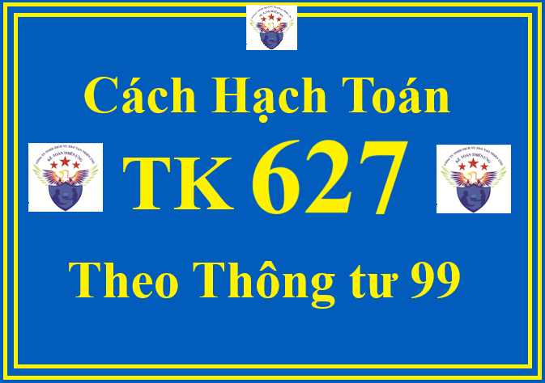

Hướng dẫn cách định khoản hạch toán tài khoản 627 - Chi phí sản xuất chung theo Thông tư 99/2025/TT-BTC hướng dẫn Chế độ kế toán doanh nghiệp (áp dụng từ ngày 01/01/2026, thay thế Thông tư 200)
1. Nguyên tắc kế toán TK 627 theo Thông tư 99/2025/TT-BTC
a) Tài khoản này dùng để phản ánh chi phí phục vụ sản xuất, kinh doanh chung phát sinh ở phân xưởng, bộ phận, đội, công trường,... phục vụ sản xuất sản phẩm, thực hiện dịch vụ, gồm: Chi phí lương nhân viên quản lý phân xưởng, bộ phận, đội sản xuất; Khấu hao TSCĐ sử dụng trực tiếp để sản xuất; Khoản trích bảo hiểm xã hội, bảo hiểm y tế, kinh phí công đoàn, bảo hiểm thất nghiệp được tính theo tỷ lệ quy định trên tiền lương phải trả của nhân viên phân xưởng, bộ phận, đội sản xuất và các chi phí có liên quan trực tiếp khác đến phân xưởng, bộ phận, đội sản xuất.
b) Riêng đối với hoạt động kinh doanh xây lắp, tài khoản này phản ánh cả các khoản trích bảo hiểm xã hội, bảo hiểm y tế, kinh phí công đoàn, bảo hiểm thất nghiệp của công nhân trực tiếp xây, lắp, nhân viên sử dụng máy thi công và nhân viên quản lý đội (thuộc danh sách lao động trong doanh nghiệp); Khấu hao TSCĐ dùng cho phân xưởng, bộ phận sản xuất; chi phí đi vay nếu được vốn hóa tính vào giá trị tài sản đang trong quá trình sản xuất dở dang; Những chi phí khác liên quan tới hoạt động của phân xưởng, bộ phận, tổ, đội sản xuất,...
c) Tài khoản 627 - Chi phí sản xuất chung chỉ sử dụng ở các doanh nghiệp sản xuất công nghiệp, nông, lâm, ngư nghiệp, XDCB, giao thông, bưu điện, du lịch, dịch vụ.
d) Tài khoản 627 - Chi phí sản xuất chung được hạch toán chi tiết cho từng phân xưởng, bộ phận, tổ, đội sản xuất.
đ) Chi phí sản xuất chung phản ánh trên Tài khoản 627 - Chi phí sản xuất chung phải được hạch toán chi tiết theo 2 loại: Chi phí sản xuất chung cố định và chi phí sản xuất chung biến đổi, trong đó:
- Chi phí sản xuất chung cố định là những chi phí sản xuất, thường không thay đổi theo số lượng sản phẩm sản xuất, như chi phí bảo dưỡng máy móc thiết bị, nhà xưởng,... và chi phí quản lý hành chính ở các phân xưởng, bộ phận, tổ, đội sản xuất,...
+ Chi phí sản xuất chung cố định phân bổ vào chi phí chế biến cho mỗi đơn vị sản phẩm được dựa trên công suất bình thường của máy móc sản xuất. Công suất bình thường là số lượng sản phẩm đạt được ở mức trung bình trong các điều kiện sản xuất bình thường;
+ Trường hợp mức sản phẩm thực tế sản xuất ra cao hơn công suất bình thường thì chi phí sản xuất chung cố định được phân bổ vào chi phí chế biến cho mỗi đơn vị sản phẩm theo chi phí thực tế phát sinh;
+ Trường hợp mức sản phẩm thực tế sản xuất ra thấp hơn công suất bình thường thì chi phí sản xuất chung cố định chỉ được phân bổ vào chi phí chế biến cho mỗi đơn vị sản phẩm theo mức công suất bình thường. Khoản chi phí sản xuất chung còn lại không phân bổ được ghi nhận vào giá vốn hàng bán trong kỳ.
- Chi phí sản xuất chung biến đổi là những chi phí sản xuất, thường thay đổi trực tiếp hoặc gần như trực tiếp theo số lượng sản phẩm sản xuất, như chi phí nguyên liệu, vật liệu gián tiếp, chi phí nhân công gián tiếp. Chi phí sản xuất chung biến đổi được phân bổ hết vào chi phí chế biến cho mỗi đơn vị sản phẩm theo chi phí thực tế phát sinh.
e) Trường hợp một quy trình sản xuất ra nhiều loại sản phẩm trong cùng một khoảng thời gian mà chi phí sản xuất chung của mỗi loại sản phẩm không được phản ánh một cách tách biệt thì chi phí sản xuất chung được phân bổ cho các loại sản phẩm theo tiêu thức phù hợp và nhất quán giữa các kỳ kế toán theo quy định của chuẩn mực kế toán Việt Nam.
g) Cuối kỳ, kế toán tiến hành tính toán, phân bổ kết chuyển chi phí sản xuất chung vào bên Nợ Tài khoản 154 - Chi phí sản xuất, kinh doanh dở dang.
h) Tài khoản 627 - Chi phí sản xuất chung không sử dụng cho hoạt động kinh doanh thương mại.
2. Kết cấu và nội dung phản ánh của Tài khoản 627 - Chi phí sản xuất chung theo Thông tư 99/2025/TT-BTC
| Bên Nợ: | Bên Có: |
| Các chi phí sản xuất chung phát sinh trong kỳ. |
- Các khoản ghi giảm chi phí sản xuất chung;
- Chi phí sản xuất chung cố định không phân bổ trong kỳ do mức sản phẩm thực tế sản xuất ra thấp hơn công suất bình thường được ghi nhận vào giá vốn hàng bán;
- Kết chuyển chi phí sản xuất chung vào bên Nợ Tài khoản 154 - Chi phí sản xuất, kinh doanh dở dang.
|
| Tài khoản 627 không có số dư cuối kỳ. | |
Tài khoản 627 - Chi phí sản xuất chung, có 7 tài khoản cấp 2:
+ Tài khoản 6271 - Chi phí nhân viên phân xưởng: Phản ánh các khoản tiền lương, các khoản phụ cấp phải trả cho nhân viên quản lý phân xưởng, bộ phận sản xuất; Tiền ăn giữa ca của nhân viên quản lý phân xưởng, bộ phận sản xuất; Khoản trích bảo hiểm xã hội, bảo hiểm y tế, kinh phí công đoàn, bảo hiểm thất nghiệp,... được tính theo tỷ lệ quy định hiện hành trên tiền lương phải trả cho nhân viên phân xưởng, bộ phận, tổ, đội sản xuất,...
+ Tài khoản 6272 - Chi phí vật liệu: Phản ánh chi phí nguyên liệu, vật liệu xuất dùng cho phân xưởng, như vật liệu dùng để sửa chữa, bảo dưỡng TSCĐ, công cụ, dụng cụ thuộc phân xưởng quản lý và sử dụng, chi phí lán trại tạm thời,...
+ Tài khoản 6273 - Chi phí dụng cụ sản xuất: Phản ánh chi phí về công cụ, dụng cụ xuất dùng cho hoạt động quản lý của phân xưởng, bộ phận, tổ, đội sản xuất,...
+ Tài khoản 6274 - Chi phí khấu hao TSCĐ: Phản ánh chi phí khấu hao TSCĐ dùng trực tiếp cho hoạt động sản xuất sản phẩm, thực hiện dịch vụ và TSCĐ dùng chung cho hoạt động của phân xưởng, bộ phận, tổ, đội sản xuất,...
+ Tài khoản 6275 - Thuế, phí, lệ phí: Phản ánh các khoản chi phí thuế, phí, lệ phí liên quan trực tiếp đến phân xưởng, bộ phận, tổ, đội sản xuất,… phục vụ cho sản xuất sản phẩm, thực hiện dịch vụ như: tiền thuê đất, thuế tài nguyên, phí bảo vệ môi trường,…
+ Tài khoản 6277 - Chi phí dịch vụ mua ngoài: Phản ánh các chi phí dịch vụ mua ngoài phục vụ cho hoạt động của phân xưởng, bộ phận sản xuất như: Chi phí sửa chữa, chi phí thuê ngoài, chi phí điện, nước, điện thoại, tiền thuê TSCĐ, chi phí trả cho nhà thầu phụ (đối với doanh nghiệp xây lắp).
+ Tài khoản 6278 - Chi phí bằng tiền khác: Phản ánh các chi phí bằng tiền ngoài các chi phí đã kể trên phục vụ cho hoạt động của phân xưởng, bộ phận, tổ, đội sản xuất.
3. Cách định khoản hạch toán Tài khoản 627 theo Thông tư 99/2025/TT-BTC
a) Khi tính tiền lương, tiền công, các khoản phụ cấp phải trả cho nhân viên của phân xưởng; tiền ăn giữa ca của nhân viên quản lý phân xưởng, bộ phận, tổ, đội sản xuất, ghi:
Nợ TK 627 - Chi phí sản xuất chung (6271)
Có TK 334 - Phải trả người lao động.
b) Khi trích bảo hiểm xã hội, bảo hiểm y tế, kinh phí công đoàn, bảo hiểm thất nghiệp, các khoản hỗ trợ người lao động (như bảo hiểm nhân thọ, bảo hiểm hưu trí tự nguyện) được tính theo tỷ lệ quy định hiện hành trên tiền lương phải trả cho nhân viên phân xưởng, nhân viên sử dụng máy thi công, bộ phận quản lý sản xuất, ghi:
Nợ TK 627 - Chi phí sản xuất chung (6271)
Có TK 338 - Phải trả, phải nộp khác.
c) Kế toán chi phí nguyên liệu, vật liệu, công cụ, dụng cụ xuất dùng cho phân xưởng:
- Khi xuất vật liệu dùng chung cho phân xưởng, như sửa chữa, bảo dưỡng TSCĐ dùng cho quản lý điều hành hoạt động của phân xưởng, ghi:
Nợ TK 627 - Chi phí sản xuất chung (6272)
Có TK 152 - Nguyên liệu, vật liệu.
- Khi xuất công cụ, dụng cụ sản xuất có tổng giá trị nhỏ sử dụng cho phân xưởng, bộ phận, tổ, đội sản xuất, căn cứ vào phiếu xuất kho, ghi:
Nợ TK 627 - Chi phí sản xuất chung (6273)
Có TK 153 - Công cụ, dụng cụ.
- Khi xuất công cụ, dụng cụ sản xuất có tổng giá trị lớn sử dụng cho phân xưởng, bộ phận, tổ, đội sản xuất, phải phân bổ dần, ghi:
Nợ TK 242 - Chi phí chờ phân bổ
Có TK 153 - Công cụ, dụng cụ.
- Khi phân bổ giá trị công cụ, dụng cụ vào chi phí sản xuất chung, ghi:
Nợ TK 627 - Chi phí sản xuất chung (6273)
Có TK 242 - Chi phí chờ phân bổ.
d) Trích khấu hao máy móc, thiết bị, nhà xưởng sản xuất,... thuộc phân xưởng, bộ phận, tổ, đội sản xuất, ghi:
Nợ TK 627 - Chi phí sản xuất chung (6274)
Có TK 214 - Hao mòn TSCĐ.
đ) Chi phí điện, nước, điện thoại,... và các chi phí khác bằng tiền thuộc phân xưởng, bộ phận, tổ, đội sản xuất, ghi:
Nợ TK 627 - Chi phí sản xuất chung (6277, 6278)
Nợ TK 133 - Thuế GTGT được khấu trừ (nếu được khấu trừ thuế GTGT)
Có các TK 111, 112, 331,...
e) Khi phát sinh các khoản chi phí thuế, phí, lệ phí như tiền thuê đất, thuế tài nguyên, phí bảo vệ môi trường,… liên quan trực tiếp đến phân xưởng, bộ phận, tổ, đội sản xuất,…, ghi:
Nợ TK 627 - Chi phí sản xuất chung (6275)
Có TK 333 - Thuế và các khoản phải nộp Nhà nước
g) Trường hợp sửa chữa, bảo dưỡng định kỳ TSCĐ thuộc phân xưởng:
- Khi chi phí sửa chữa, bảo dưỡng định kỳ TSCĐ thực tế phát sinh, ghi:
Nợ TK 2413 - Sửa chữa, bảo dưỡng định kỳ TSCĐ
Nợ TK 133 - Thuế GTGT được khấu trừ (nếu có)
Có các TK 331, 111, 112,...
- Khi chi phí sửa chữa, bảo dưỡng định kỳ TSCĐ hoàn thành, kết chuyển chi phí sửa chữa, bảo dưỡng định kỳ TSCĐ vào chi phí chờ phân bổ, ghi:
Nợ TK 242 - Chi phí chờ phân bổ
Có TK 2413 - Sửa chữa, bảo dưỡng định kỳ TSCĐ.
- Định kỳ, phân bổ dần chi phí sửa chữa, bảo dưỡng định kỳ TSCĐ vào chi phí sản xuất chung, ghi:
Nợ TK 627 - Chi phí sản xuất chung
Có TK 242 - Chi phí chờ phân bổ
h) Trường hợp doanh nghiệp có TSCĐ cho thuê hoạt động, khi phát sinh chi phí liên quan đến TSCĐ cho thuê hoạt động:
- Khi phát sinh các chi phí trực tiếp ban đầu liên quan đến cho thuê hoạt động, ghi:
Nợ TK 627 - Chi phí sản xuất chung
Nợ TK 133 - Thuế GTGT được khấu trừ (nếu có)
Có các TK 111, 112, 331,...
- Định kỳ, tính, trích khấu hao TSCĐ cho thuê hoạt động vào chi phí SXKD, ghi:
Nợ TK 627 - Chi phí sản xuất chung (6274)
Có TK 214 - Hao mòn TSCĐ (hao mòn TSCĐ cho thuê hoạt động).
i) Tại thời điểm kết thúc kỳ kế toán, xác định lãi tiền vay phải trả được vốn hóa vào sản phẩm sản xuất dở dang theo quy định, ghi:
Nợ TK 627 - Chi phí sản xuất chung (tài sản đang sản xuất dở dang)
Có các TK 111, 112, 335, 341,...
k) Các chi phí sản xuất chung bằng tiền hoặc dịch vụ mua ngoài, ghi:
Nợ TK 627 - Chi phí sản xuất chung (6277, 6278)
Nợ TK 133 - Thuế GTGT được khấu trừ (nếu có)
Có các TK 111, 112, 331,...
l) Nếu phát sinh các khoản giảm chi phí sản xuất chung, ghi:
Nợ các TK 111, 112, 138,...
Có TK 627 - Chi phí sản xuất chung.
m) Đối với chi phí sản xuất chung sử dụng chung cho hợp đồng BCC tại bên kế toán cho hợp đồng BCC
- Khi phát sinh chi phí sản xuất chung sử dụng chung cho hợp đồng BCC, căn cứ hóa đơn và các chứng từ liên quan, ghi:
Nợ TK 627 - Chi phí sản xuất chung (chi tiết cho từng hợp đồng)
Nợ TK 133 - Thuế GTGT được khấu trừ (nếu có)
Có các TK 111, 112, 331...
- Định kỳ, kế toán lập Bảng phân bổ chi phí chung (có sự xác nhận của các bên) để phân bổ chi phí sản xuất chung sử dụng chung cho hợp đồng BCC cho các bên, ghi:

Nợ TK 138 - Phải thu khác (chi tiết cho từng đối tác)
Có các TK 627 - Chi phí sản xuất chung
Có TK 133 - Thuế GTGT được khấu trừ (nếu chia thuế đầu vào)
Có TK 3331 - Thuế GTGT phải nộp (nếu thuế đầu vào của chi phí chung đã khấu trừ hết, phải ghi tăng số thuế đầu ra phải nộp).
n) Tại thời điểm kết thúc kỳ kế toán, căn cứ vào Bảng phân bổ chi phí sản xuất chung để kết chuyển hoặc phân bổ chi phí sản xuất chung vào các tài khoản có liên quan cho từng sản phẩm, nhóm sản phẩm, dịch vụ theo tiêu thức phù hợp:
Nợ TK 154 - Chi phí sản xuất, kinh doanh dở dang
Nợ TK 632 - Giá vốn hàng bán (chi phí SXC cố định không phân bổ)
Có TK 627 - Chi phí sản xuất chung.